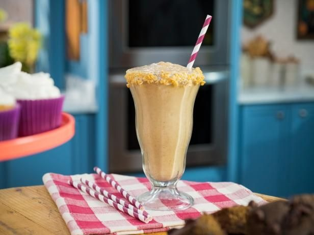

Salted Caramel Milkshake
Nutritionist Joy Bauer’s genius formula combines a bunch of superfoods to come up with this thick and dessert-y smoothie that tastes as indulgent as any ice cream-based shake.

Cotton Candy Milkshake
Fluffy cloud of the stuff, and garnished with lollipops and popping candy rocks, is what you put together when you need to knock it out of the park, with not too much time nor effort on your part.

Biscuit and Jam Milkshake
That is, biscuit in the European sense. An inclusion of speculoo butter, a thick, caramel-y spread inspired by the spice cookies from Belgium, gives these shakes a little something special.